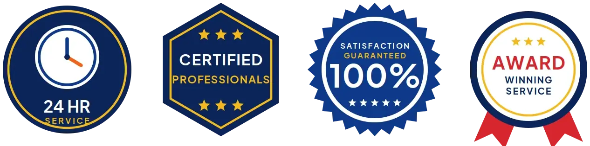
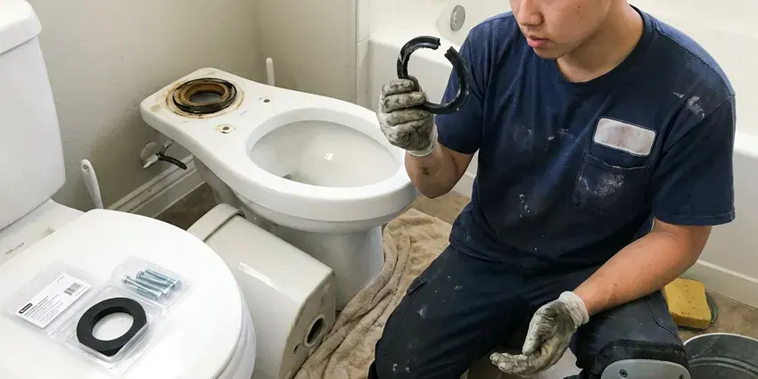
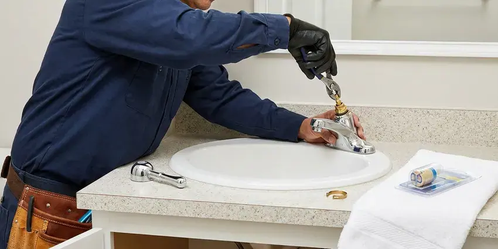
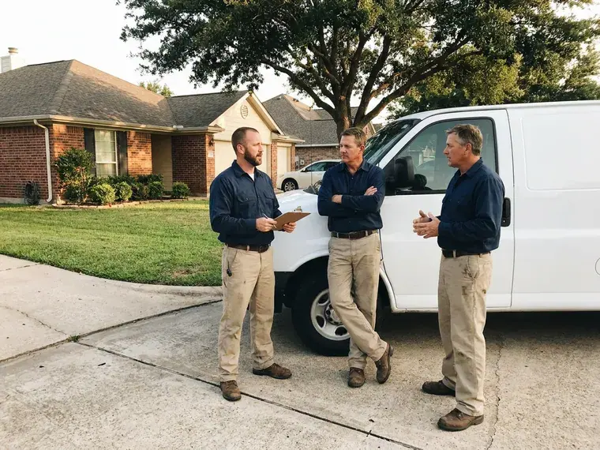
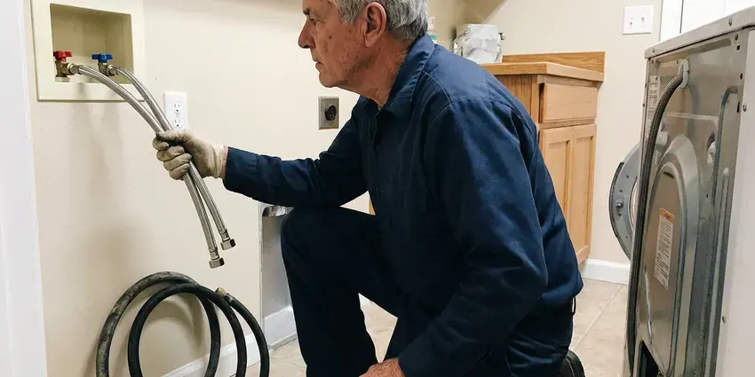
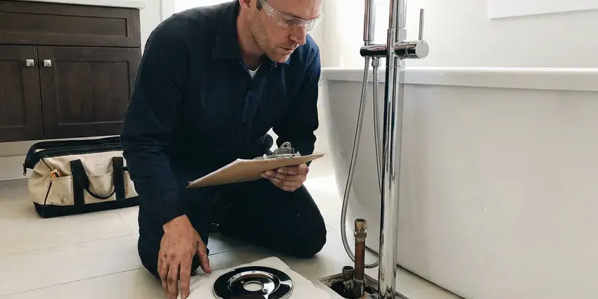
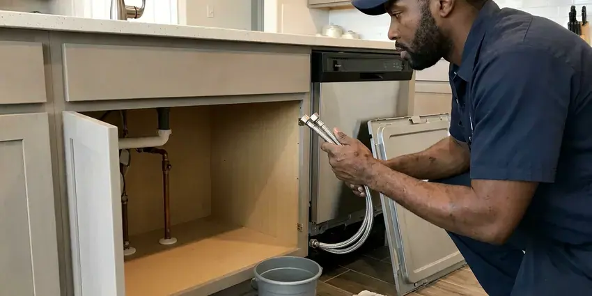
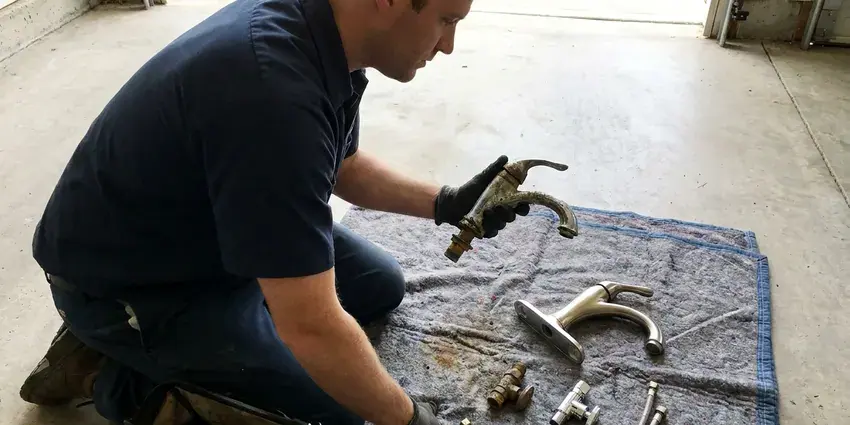
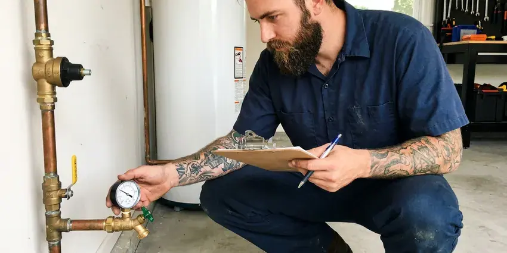

Shower Repair in Lakeland, FL
A shower that fights you every morning is fixable. HDF Plumbing repairs valves and diverters in Lakeland, FL and rarely needs to open the wall.
- Same-Day Shower Repair
- Leak Detection Available
- Workmanship Guarantee
- Licensed and Insured
Shower Still Dripping in Lakeland, FL?
Describe the drip or the swing and we will give you a flat price.
Shower Repair in Lakeland, FL
HDF Plumbing sees a lot of shower trouble in Lakeland that starts below the surface. A high water table across much of Florida affects drainage, septic design, and how easily crews can dig for underground repairs. Small shifts like that open grout lines and loosen drain joints, and the water that gets through can sit under a pan for months. A moisture meter tells us fast.
Our expertise includes:
- Showerhead, Arm and Diverter Leak Repair
- Shower Drain Clog Clearing
- Dripping Shower Valve Repair

Additional Bathroom Plumbing Services in Lakeland, FL
From toilets to showers, our bathroom plumbing team in Lakeland, FL repairs, installs, and replaces every fixture with clean, code-compliant work.


Professional toilet repair, Lakeland


Toilet Bowl Replacement in Lakeland

Faucet Repair near Lakeland


Customers
Why Choose HDF Plumbing for Shower Repair in Lakeland, FL?
Quick fixes come back. A plumber who replaces only the O-rings on a scored cartridge will be back in a few months, so we replace the whole cartridge with a genuine part and grease the valve body. The drip stays gone.
- Correct Cartridges, We match the exact cartridge to your valve brand and model.
- Flat Pricing, You get a flat price before any repair starts.
- Local Experience, We see the same valves in Florida homes week after week.
Citywide Coverage
Every neighborhood in Lakeland is on our route, from older streets with original two-handle valves to new builds with thermostatic showers. Shower repairs go on the board most weekdays, and same-day slots open up often. Early calls get the best odds.
Experienced Team
Our plumbers repair shower valves every week, from simple cartridge swaps to valve replacements behind tile. They can remove a seized cartridge without wrecking the body, and that alone can save you a valve replacement. The right puller matters.
Safety-First Approach
Tubs and tile get covered before we start. We pad the tub and floor and cover the drain, because a dropped tool chips enamel and small parts love to vanish. We clean up after.
Trusted Certified Lakeland Plumbing Services Professionals
At HDF Plumbing, we are proud to offer certified plumbing services throughout Lakeland, FL. Credentials matter in this trade. Our plumbers hold recognized industry credentials, and they follow strict safety and quality rules on every repair, installation and maintenance call we run.
Call Us Now PHCC Plumbing Contractor Recognition
PHCC Plumbing Contractor Recognition Better Business Bureau (BBB) Accreditation
Better Business Bureau (BBB) Accreditation Angi Certified Pro
Angi Certified Pro ISO 9001 Quality Management Certification
ISO 9001 Quality Management CertificationFixing Showers in Lakeland, FL
Clogged Shower Drain Clearing in Lakeland, FL
Hair and soap scum cause nearly every slow shower drain. We pull the strainer and run a hand auger through the trap, and if the clog sits past the trap in the branch line, we switch to a drum machine with a smaller cable. Drain cleaner usually misses the clog. A hair catcher over the strainer keeps the next one from forming.

Shower Drain Body Repair in Lakeland
Drain bodies can crack or work loose under the pan. When that happens, water goes under the shower instead of down the pipe, and the first sign is often a soft spot in the floor next to the shower or a stain in the ceiling below. We clear and test the drain. We reseal or replace the drain body as needed.
Shower Pan and Wall Leak Repair in Lakeland, FL
Stains on the ceiling below are often the first clue. A meter on the walls and a flood test on the pan show whether the leak is the valve, the pan or the drain. Then we fix the source. On slab homes, these leaks can spread into the flooring of the next room before anyone sees them.
Low Shower Pressure Repair in Lakeland, FL
Low pressure at the shower with good pressure at the sink narrows it down fast. With good pressure elsewhere, the problem is in the head, the restrictor or the cartridge, and that is typically a short repair. The head comes off first. Low pressure everywhere sends us to the pressure regulator and main valve instead.
Shower Diverter Repair in Lakeland, FL
Diverters send water up to the head instead of out the tub spout. When the gate in a lift-style spout wears or a three-handle diverter stem loses its washer, water keeps pouring from the spout and the shower gets weak. Usually a new spout fixes it. It is a short job.
Commercial Shower Repair in Lakeland, FL
Gyms and apartment buildings run showers dozens of times a day. We repair commercial pressure-balance and thermostatic valves with heavy-duty cartridges, and we can work early or late so a locker room or a unit is not out of service during peak hours. We stock tamper-resistant heads. Limit stops are set to code on each valve.
Dripping Showerhead Repair in Lakeland
Drips from the head itself almost always come from the valve, not the head. Water that keeps coming out after the handle is off has to be getting past a worn cartridge or seat, so replacing the showerhead alone will not stop it. We fix the valve. Leaks at the arm threads are different, and those get new thread tape and a snug turn.

Slow Shower Drain Repair in Lakeland, FL
Standing water at your ankles is the first sign. Hard water makes it worse, because the scale binds with soap scum and hair into a mat that sticks to the pipe wall and builds out over time. We cut it out with an auger. For stubborn buildup in the branch line, we jet the line with water instead of using acid cleaners.
Local Shower Repair Near Me, Lakeland, FL
Booking is simple. Call (904) 925-7356 with the brand on your shower handle or a photo of the trim. While you wait, we check which cartridge fits and whether it is stocked or needs a day. Then we set a time.
Homes around Lakeland have everything from old three-handle valves to new thermostatic systems. Our trucks carry stems for older valves and cartridges for newer ones, which keeps most jobs to a single trip. Odd valves take a day.
HDF Plumbing at a Glance
- Licensed and insured plumbers serving Lakeland, FL
- Same-day appointments and 24/7 emergency response
- Clear written estimates, no hidden fees
- 4.9-star rated by 739+ Florida customers
Lakeland Map
Lakeland Information
- Population
- 122,264
- Area codes
- 863/407/352
- Service area
- Lakeland and towns within a 40 mile drive
- Nearby
- Winter Haven, Brandon, Wesley Chapel, Riverview
Many wells in Florida produce water with a sulfur smell or high iron, which often calls for treatment to protect fixtures and appliances. A shower repair in Lakeland, FL stops the drip and resets the anti-scald stop in one visit.
Talk to a Plumber
Call HDF Plumbing for reliable plumbing work done by licensed pros in Lakeland, FL.
Our Specialized Plumbing Services in Lakeland, FL
At HDF Plumbing, you get every kind of plumbing service from one company across Lakeland, FL. From leak detection to full system installs, our team works fast and charges fair prices on homes and commercial properties alike. Take a look at our core services below:

Plumbing Repair near Lakeland

Bathroom Plumbing near Lakeland

Kitchen Plumbing in Lakeland


Plumbing Replacement near Lakeland


Plumbing Maintenance in Lakeland
How a Shower Repair Goes in Lakeland, FL
Shower repair should be clear and quick. Here is how we do it.
Describe the Problem
Reach us at (904) 925-7356 with the brand on the handle. We check which cartridge it takes.
Diagnose and Quote
The plumber pulls the trim and reads the cartridge, then quotes a flat price.
Fix It Right
We install genuine parts, set the limit stop and test the balance, and clean up.
Frequently Asked Questions About Shower Repair in Lakeland
Simple fixes run $100 to $250. A valve replacement typically costs $300 to $800, depending mostly on access and whether any tile needs to be removed. Access drives the price. The price is set before we begin.
Yes, in writing. The labor is guaranteed, the parts have their own warranties and the details are on your invoice. Repeat problems bring us back.
Showerheads are fair game for most people. Cartridges and anything behind tile are where DIY goes wrong, since a seized cartridge can crack the valve body. That is a common call for us.
Start with the showerhead. Scale in the head is the usual cause, then a clogged cartridge or a sticking spool. Each gets checked. If every tap is weak, we check the regulator.
One to three hours covers most. A cartridge swap or a drain clearing usually finishes in about an hour, while a valve replacement that needs wall access can take half a day. We tell you up front.
Musty smells and loose tile are the quiet ones. Drips, weak spray and temperature that drifts are the obvious ones. Each one is worth a look.
Every major brand, plus a lot of older ones. Moen, Delta, Kohler, Pfister, American Standard and Grohe make up most of what we see, and we carry cartridges for the common models. Discontinued brands sometimes take a day.
Plan on a morning at most for the common ones. Cartridge swaps and drain clears take about an hour, and a valve replacement can take half a day, depending on access. You can still use the sink.
Hear From Customers Who Hired Our Plumbing Experts
Kevin O.
Before buying our house I paid for a sewer camera inspection. HDF Plumbing found a belly in the line that held standing water about forty feet from the cleanout. We used the video to get the sellers to fix it before closing.
Sewer Camera Inspection · Four Corners, FLPaul B.
Our pit pump ran nonstop even in dry weather. The plumber found the check valve was stuck open, so the same water kept cycling back into the pit. New valve, new float switch, done in an hour. It runs quiet now.
Sump Pump · Brandon, FL
Daniel K.
A pipe burst in the garage ceiling at 11 at night. Someone answered on the second ring, and the plumber was in my driveway about fifty minutes later. He shut off the main, cut out the split section, and had water back on before 2 am.
Emergency Plumbing · Winter Haven, FL
Sofia M.
Two new toilets went in during one visit. The tech set them on new wax rings and swapped the old supply lines. He also noticed our bathroom faucet dripping and replaced the cartridge while he was there. No mess left behind.
Toilet Installation · Four Corners, FL
Patricia H.
We had a slab leak that two other companies could not find. HDF Plumbing located it in under an hour with a listening device. They rerouted the line through the attic instead of breaking up the floor, so we kept our kitchen tile.
Slab Leak Repair · Lakeland, FLAngela D.
Our sump pump quit during a storm and the water was an inch from the basement carpet. HDF Plumbing put in a new pump with a battery backup that same evening. We have had two heavy rains since. It kicked on both times.
Sump Pump · Poinciana, FL